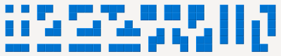

Junior is a simplified game variant for two players. It is played on the same 14×14 board as game variant Duo but uses only the pentominoes that have relatively simple shapes.
The 24 pieces used in Junior:

Bonus points are not used in game variant Junior.